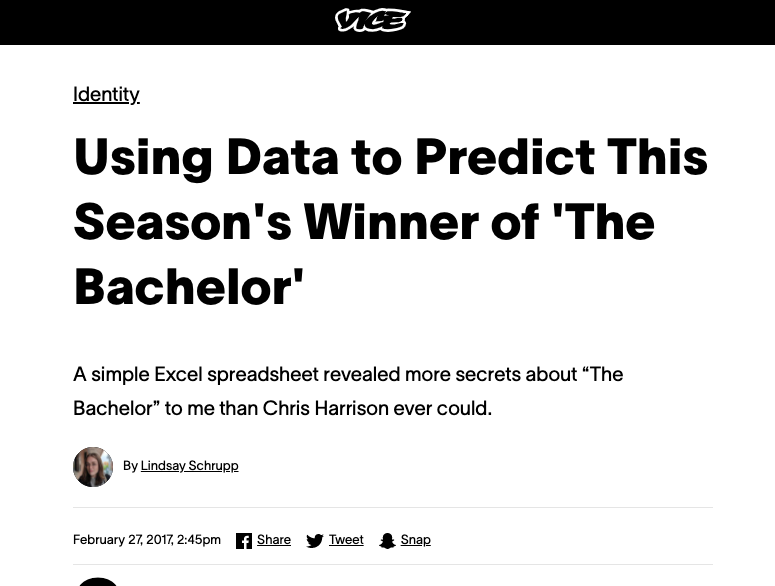
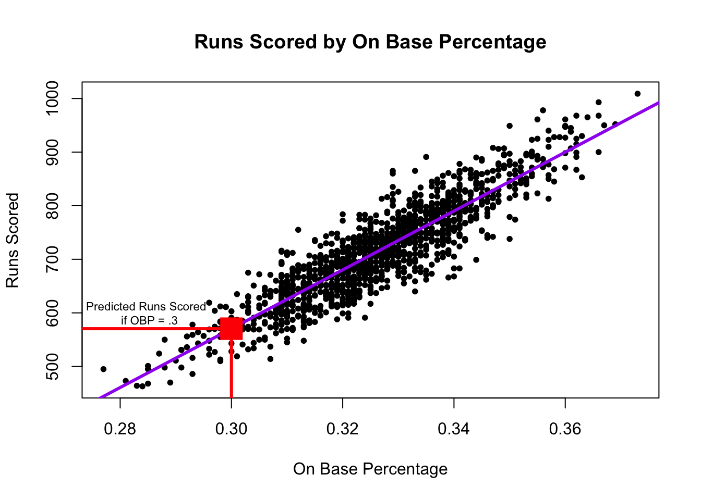

baseball <- read.csv("baseball.csv")8 Prediction with Regression
We are continuing our topic of prediction, this time adding a new tool: linear regression.
Recall that we predict (estimate/guess) some unknown using information we have – and do so as accurately and precisely as possible.
- Choose an approach(es)
- Using an observed (known) measure as a direct proxy to predict an outcome
- Using one or more observed (known) measures in a regression model to predict an outcome
- (Beyond the course) Using a statistical model to select the measures to use for predicting an outcome
- Assess accuracy and precision
- Iterate to improve the prediction/classification
- Often, we repeat steps 1-3 until we are confident in your method for predicting.
- Danger Zone: Eventually, after you have tested the approach and are satisfied with the accuracy, you may start applying it to new data for which you do not know the right answer.
8.1 Regression in the wild.
Regression is used across many domains for prediction and classification, from fantasy football to making World Cup predictions, or even predicting how far a contestant will go on The Bachelor or The Bachelorette.
Using data to predict reality TV outcomes.

In politics, we might use regression to build campaign models– predicting which voters are persuadable, which supporters will volunteer at campaign events, which supporters will turn out to vote, etc.

8.2 Application: Baseball Predictions
For our first example, we will stay outside of politics and use regression to predict the success of a baseball team.
Moneyball is a $100 million Hollywood movie that is all about linear regression… and some baseball… and Brad Pitt, but really… it’s MOSTLY about linear regression

The movie describes the Oakland A’s shift to start using data to build their team. They make two observations 1) To win baseball games, you need runs. 2) To score runs, you need to get on base. We can estimate what on base percentage we would need as a team to score enough runs to make the playoffs in a typical season.
We will use regression to make these predictions.
For a video explainer of the code for this application, see below. (Via youtube, you can speed up the playback to 1.5 or 2x speed.)
We use baseball.csv data
RS: runs scored;RA: runs allowed;W: wins;Playoffs: whether team made playoffs;OBP: on base percentage;BA: batting average;SLG: Slugging Percentage
head(baseball) Team League Year RS RA W OBP SLG BA Playoffs RankSeason
1 ARI NL 2012 734 688 81 0.328 0.418 0.259 0 NA
2 ATL NL 2012 700 600 94 0.320 0.389 0.247 1 4
3 BAL AL 2012 712 705 93 0.311 0.417 0.247 1 5
4 BOS AL 2012 734 806 69 0.315 0.415 0.260 0 NA
5 CHC NL 2012 613 759 61 0.302 0.378 0.240 0 NA
6 CHW AL 2012 748 676 85 0.318 0.422 0.255 0 NA
RankPlayoffs G OOBP OSLG
1 NA 162 0.317 0.415
2 5 162 0.306 0.378
3 4 162 0.315 0.403
4 NA 162 0.331 0.428
5 NA 162 0.335 0.424
6 NA 162 0.319 0.405Runs scored are highly correlated with team wins.
What the A’s noticed is that a team’s On Base Percentage is also highly correlated with runs scored. This aligns with conventional wisdom. Players get a lot of hype when they achieve a high OBP.
On the 2024 world series: “The Yankees have an AL-best .347 on-base percentage… By now, it should be boilerplate: the easiest way to score runs is to put people on base. And the Yankees have scored enough to make it to the World Series.” - Jeff Passan, ESPN
This correlation shows up in our data, too.
8.3 Step 1: Approach- Regression in R
A regression draws a “best fit line” between the points. This allows us – for any given OBP – to estimate the number of runs scored.
- Our best prediction of the number of runs scored would be the spot on the purple line directly above a given OBP.
The regression model is \(Y = \alpha + \beta X + \epsilon\). Let’s demystify this. See also this interactive tutorial: https://ellaudet.iq.harvard.edu/linear_model.
- A regression model describes the relationship between one or more independent variables \(X\) (explanatory variables) and an outcome variable \(Y\) (dependent variable)
- For example, the relationship between our independent variable, On Base Percentage, and our dependent variable, Runs Scored
- We want to know what happens with our dependent variable \(Y\) if our independent variable \(X\) increases.
- As we increase our On Base Percentage, a regression model will help us estimate how much we should expect our Runs Scored to increase (or decrease) – aka rise over run aka the slope!
- \(\alpha\) and \(\beta\) are considered “parameters” – things we don’t know but want to estimate. These two numbers will define exactly how we think \(X\) and \(Y\) are related (the shape of the line).
- No two variables are perfectly related, so we also have the \(\epsilon\) term, which describes the error in the model
When we have data, we estimate \(Y\), \(\alpha\), and \(\beta\): \(\hat Y = \hat \alpha + \hat \beta X\).
- The \({\hat{hat}}\) over the letters means those are our estimated values.
In R, the regression syntax is similar to what we use in making a boxplot: fit <- lm(y ~ x, data = mydata)
fitis just whatever you want to call the output of the model,yis the name of the dependent variable,xis the name of the independent variable, andmydatais whatever you have called your dataframe. E.g.:
fit <- lm(RS ~ OBP, data = baseball)When we have data, we estimate \(Y\), \(\alpha\), and \(\beta\): \(\hat Y = \hat \alpha + \hat \beta X\).
- Our model gives us the “coefficient” estimates for \(\hat \alpha\) and \(\hat \beta\).
coef(fit)(Intercept) OBP
-1076.602 5490.386 The first coefficient is \(\hat \alpha\), this represents the intercept – the estimated value our dependent variable will take if our independent variable (\(x\)) is 0.
- The value the estimated runs scored would be if a team had a 0.000 on base percentage. In our case, this value is estimated to be negative, which is impossible (but it would also be unusual for a team to have a 0.000 on base percentage). Therefore, the intercept isn’t inherently substantively interesting to us.
The second coefficient is \(\hat \beta\) is the slope This represents the expected change in our dependent variable for a 1-unit increase in our independent variable.
- For example, if we go from a 0.000 on base percentage to a 1.000 on base percentage, we would expect a 5490.4 increase in runs scored!
- Note: slope can be positive or negative similar to correlation … BUT …
- Note: slope is in the units of the dependent variable (e.g., runs). It is not constrained to be between -1 and 1.
- It is telling us that the greater the OBP, the better!
8.3.1 Visualizing a regression
We can plot the regression using a scatterplot and abline().
plot(x=baseball$OBP, y=baseball$RS,
ylab = "Runs Scored",
xlab = "On Base Percentage",
main="Runs Scored by On Base Percentage",
pch=20)
## Add regression line
abline(fit, lwd=3, col = "purple") # add line
8.3.2 Making predictions with regression
A regression model allows us to estimate or “predict” values of our dependent variable for a given value of our independent variable.

The red dot represents our estimate (best prediction) of the number of runs scored if a team has an on base percentage of .300. In R, we can calculate this value using predict().
- The syntax is
predict(fit, data.frame(x = value))wherefitis the name of the model,xis the name of the independent variable, andvaluerepresents the value for the independent variable for which you want to predict your outcome (e.g., .300).
predict(fit, data.frame(OBP=.300)) 1
570.5137 Under the hood, this is just using the regression formula described above. For example, to estimate the number of runs scored for a .300 on base percentage, we take \(\hat \alpha + \hat \beta * .300\)
- Note that below we compare the output of the predict function to our output if we manually calculated the estimated value.
predict(fit, data.frame(OBP=.300)) 1
570.5137 # a + b*.300
coef(fit)[1] + coef(fit)[2]*.300(Intercept)
570.5137 Let’s say a team thought they needed about 900 runs scored to get to the playoffs, and they were pretty sure they could get a team on base percentage of .500. How many runs would they be expected to score with that OBP? Do you think they will make the playoffs?
Try on your own, then expand for the solution.
predict(fit, data.frame(OBP=.500)) 1
1668.591 It’s greater than 900, so we should feel good about our chances.
8.4 Step 2: Checking accuracy of model
Understanding prediction error: Where do \(\hat \alpha\) and \(\hat \beta\) come from? Recall that a regression tries to draw a “best fit line” between the points of data.
Under the hood of the regression function, we are searching for the values of \(\hat \alpha\) and \(\hat \beta\) that try to minimize the distance between the individual points and the regression line.

This distance is called the residual: \(\hat \epsilon_i = Y_i - \hat Y_i\).
- This is our prediction error: How far off our estimate of Y is (\(\hat Y_i\)) from the true value of Y (\(Y_i\))
- Linear regressions choose \(\hat \alpha\) and \(\hat \beta\) to minimize the “squared distance” of this error (think of this as the magnitude of the distance). This is why we tend to call this type of linear regression ordinary least squares (OLS regression).
If instead we chose the red line in the image below to be the regression line, you can see that the typical prediction error would be much larger. That’s why we end up with the purple line.

8.4.1 Root Mean Squared Error
Just like we had root mean squared error in our poll predictions, we can calculate this for our regression.
- Just like with the polls, this is the square root of the mean of our squared prediction errors, or “residuals” in the case of regression.
- R will give us this output using this formula where
fitis the hypothetical name we have provided for the regression model:sqrt(mean(fit$residuals^2))
- R will give us this output using this formula where
sqrt(mean(fit$residuals^2))[1] 39.78956- In our case, using on based percentage to predict runs scored, our estimates are off typically, by about 40 runs scored.
- On the graph, this means that the typical distance between a black point and the purple line is about 40.
8.5 Step 3: Iterate and Compare Models
When building predictive models, often researchers want to minimize this Root-Mean Squared Error – minimizing the magnitude of the typical prediction error (the distance between the actual value of our outcome, and the true value)
Example: Let’s compare the RMSE from two different models:
## Predicting Runs Scored with OBP
fit <- lm(RS ~ OBP, data = baseball)
## Predicting Runs Scored with Batting Average
fit2 <- lm(RS ~ BA, data = baseball)The Oakland A’s noticed that OBP was a more precise predictor than BA, and RMSE gives us one way to assess this.
8.5.1 Regression with Multiple Predictors
You can also add more than 1 predictor to a regression using the + sign.
## Predicting Runs Scored with OBP and Slugging Percentage
fit3 <- lm(RS ~ OBP + SLG, data = baseball)
sqrt(mean(fit3$residuals^2))[1] 25.09135Look how the RMSE dropped again, improving our prediction.
8.6 Application: Predicting Campaign Donations
Can we predict campaign donations?
Data from Barber, Michael J., Brandice Canes‐Wrone, and Sharece Thrower. “Ideologically sophisticated donors: Which candidates do individual contributors finance?.” American Journal of Political Science 61.2 (2017): 271-288
load("donationdata.RData")Variables
donation: 1=made donation to senator, 0=no donation madetotal_donation: Dollar amount of donation made by donor to Senatorsameparty: 1=self-identifies as being in the candidate’s party; 0 otherwiseNetWorth: Donor’s net worth. 1=less than 250k, 2=250-500k; 3=500k-1m; 4=1-2.5m; 5=2.5-5m; 6=5-10m; 7=more than 10mIncomeLastYear: Donor’s household annual income in 2013. 1=less than 50k; 2=50-100k; 3=100-125k; 4=125-150k; 5=150-250k; 6=250-300k; 7=300-350k; 8=350-400k; 9=400-500k; 10=more than 500kperagsen: percent issue agreement between donor and senatorper2agchal: percent issue agreement between donor and the senator’s challengercook: Cook competitiveness score for the senator’s race. 1 = Solid Dem or Solid Rep; 2 = Likelymatchcommf: 1=Senator committee matches donor’s profession as reported in FEC file; 0=otherwiseEdsum: Donor’s self-described educational attainment. 1=less than high school; 2=high school; 3=some college; 4=2-year college degree; 5=4-year college degree; 6=graduate degree
Data represent information on past donors to campaigns across different states. The key dependent variable that we want to predict is total_donation: the total dollar amount a particular person in the data gave to their senator in the 2012 election campaign.
Can we predict how much someone donates to a U.S. Senate campaign?
- Choose approach: regression of donations on donor characteristics
- Check accuracy: calculate root-mean-squared error
- Iterate: try different regression model specifications
Let’s try a prediction based on a person’s income.
fit <- lm(total_donation ~ IncomeLastYear, data = donationdata)From this, we can
- Plot the relationship
- Make specific predictions at different levels of income
- Check accuracy by calculating the prediction errors and RMSE
8.6.1 Visualizing the results
Note that the correlation is a bit weaker here.
plot(x=donationdata$IncomeLastYear,
y=donationdata$total_donation,
ylab= "Total Donation ($)",
xlab = "Income Last Year",
main = "Predicting Total Donations Using Income")
abline(fit, col="green4", lwd=2)
8.6.2 Step 1: Calculate Predictions
We can calculate predictions based on a level of income. Example: Level 5 of income represents an income of $150k-250k. What level of donation would we expect?
predict(fit, data.frame(IncomeLastYear = 5)) 1
348.8581 ## alternative using coef()
coef(fit)[1] + coef(fit)["IncomeLastYear"]*5(Intercept)
348.8581 8.6.3 Step 2: Check Accuracy
We can calculate the Root Mean Squared Error
sqrt(mean(fit$residuals^2))[1] 914.52738.6.4 Step 3: Iterate
YOUR TURN: Change the model and see if it improves the prediction using RMSE using sqrt(mean(fit$residuals^2)).
8.6.5 Adding Model Predictors
New Model Example
fitnew <- lm(total_donation ~ IncomeLastYear + NetWorth + sameparty,
data=donationdata)New Predictions: note how we add more variables
predict(fitnew, data.frame(IncomeLastYear = 5, NetWorth = 4, sameparty = 1)) 1
406.9705 ## alternative using coef()
coef(fitnew)[1] + coef(fitnew)["IncomeLastYear"]*5 +
coef(fitnew)["NetWorth"]*4 + coef(fitnew)["sameparty"]*1(Intercept)
406.9705 Root Mean Squared Error
sqrt(mean(fitnew$residuals^2))[1] 908.9817When we have multiple predictors, this changes our interpretation of the coefficients slightly.
- We now interpret the slope as the change in the outcome expected with a 1-unit change in the independent variable– holding all other variables constant (or ``controlling” for all other variables)
- For example, for a 1-unit change in Income, we would expect about a $68 increase in estimated donations, holding constant Net Worth and whether the person shared partisanship with the senator.
coef(fitnew) (Intercept) IncomeLastYear NetWorth sameparty
-242.02780 67.96825 29.55847 190.92323 Think of this like a set of light switches. How does adjusting one light switch affect the light in the room– holding constant all other switches.

When we make predictions with multiple variables, we have to tell R where we want to set each variable’s value.
predict(fitnew, data.frame(IncomeLastYear = 5, NetWorth = 4, sameparty = 1)) 1
406.9705 See how the prediction changes if you shift IncomeLastYear but keep Net Worth and partisanship where they are. That’s the idea of “controlling” for the other variables!
How could we keep improving the predictions?
Eventually, we would want to apply this prediction model in a real-world setting.
- How could campaigns use these types of prediction models?
8.7 Uncertainty with Prediction
Regression (and other prediction algorithms) give us our best guess
- But any guess has some uncertainty, prediction error, and potential outliers
- Sometimes these errors can be systematic
- Even when we use more advanced statistical models
- A “best guess” is often better than a random guess– but shouldn’t necessarily be treated as “ground truth.”
Prediction helps us guess unknowns with observed data, but MUST PROCEED WITH CAUTION
8.7.1 Example: Butterfly Ballot in Florida
In the U.S. 2000 presidential election, the race came down to Florida, which was extremely close. As part of the contest, different counties in Florida came under a microscope. One result that seemed unusual was the amount of votes Buchanan received in certain areas, which seemed to be a result of an odd ballot design choice. In this exercise, we examine voting patterns in Florida during the 2000 election.
For more on the 2000 race, you can watch this video.
Load the data and explore the variables
county: county nameClinton96: Clinton’s votes in 1996Dole96: Dole’s votes in 1996Perot96: Perot’s votes in 1996Bush00: Bush’s votes in 2000Gore00: Gore’s votes in 2000Buchanan00: Buchanan’s votes in 2000
florida <- read.csv("florida.csv")Chapter 4 in QSS also discusses this example.
Using what you learned from the last section, try to complete the following steps:
- Regress Buchanan 2000 votes (your Y) on Perot 1996 (your X) votes
- Create a scatterplot of the two variables and add the regression line
- Find and interpret the slope coefficient for the relationship between Perot and Buchanan votes
- Calculate the root-mean-squared error for the regression and interpret this
Try on your own, then expand for the solution.
For every 1 additional vote Perot received in 1996, we expect Buchanan to receive .036 additional votes in 2000.
fit <- lm(Buchanan00 ~ Perot96, data = florida)
coef(fit)(Intercept) Perot96
1.34575212 0.03591504 In 1996, Perot received 8 million votes as a third-party candidate. Buchanan received less than 1/2 a million. Overall Perot received more votes, but where Perot received votes in 1996 was positively correlated with where Buchanan received votes in 2000.
plot(x=florida$Perot96,
y=florida$Buchanan00,
ylab="Buchanan Votes 2000",
xlab="Perot Votes 1996",
pch=20)
abline(fit, lwd=3, col="purple")sqrt(mean(fit$residuals^2))[1] 311.6187A typical prediction error is about 316.4 votes above or below the Buchanan total.
8.7.2 Multiple Predictors
Can we reduce the error by adding more variables?
fitnew <- lm(Buchanan00 ~ Perot96 + Dole96 + Clinton96, data = florida)
coef(fitnew) (Intercept) Perot96 Dole96 Clinton96
20.572650070 0.030663207 -0.001559196 0.001865809 Again, when we have multiple predictors, this changes our interpretation of the coefficients slightly.
- We now interpret the slope as the change in the outcome expected with a 1-unit change in the independent variable– holding all other variables constant (or ``controlling” for all other variables)
- For example, a 1-unit increase (a 1-vote increase) in the number of Perot voters in 1996 is associated with a 0.03 vote increase in the number of Buchanan votes in 2000, holding constant the number of Clinton and Dole votes a county received.
When we make predictions with multiple variables, we have to tell R where we want to set each variable’s value.
predict(fitnew, data.frame(Perot96=20000, Clinton96=300000, Dole96=300000)) 1
725.8208 See how the prediction changes if you shift Perot96 but keep the other variables where they are. That’s the idea of “controlling” for the other variables!
The addition of the new variables, in this case, made very little difference in the RMSE.
sqrt(mean(fit$residuals^2))[1] 311.6187sqrt(mean(fitnew$residuals^2))[1] 308.7296With little change from the addition of predictors, let’s stick with the more simple model and explore the prediction errors.
plot(x=fitted(fit), # predicted outcome
y=resid(fit), # prediction error
type="n", # makes the plot blank
xlim = c(0, 1500),
ylim = c(-750, 2500),
xlab = "Predicted Buchanan Votes",
ylab = "Prediction Error")
abline(h = 0) # adds horizontal line
text(x=fitted(fit), y=resid(fit), labels = florida$county, cex=.8)How does the prediction error change if we remove Palm Beach County?
florida.pb <- subset(florida, subset = (county != "PalmBeach"))
fit2 <- lm(Buchanan00 ~ Perot96, data = florida.pb)
sqrt(mean(fit2$residuals^2))[1] 86.41017My, oh my, our RMSE also goes way down if we remove Palm Beach. Something unique seems to be happening in that county. See this academic paper for an elaboration of the evidence that “The Butterfly [ballot] Did it.”
8.7.3 Confidence Intervals
Social scientists like to characterize the uncertainty in their predictions using what is called a “confidence interval.”
- Confidence intervals show a range of values that are likely to contain the true value
predict(fit, data.frame(Perot96 = 13600), interval = "confidence") fit lwr upr
1 489.7903 394.8363 584.7443By default, R supplies the 95% confidence interval.
- For example, our estimate is for a county with 13,600 votes for Perot in 1996, the expected Buchanan vote is 489.79 votes.
- The confidence interval is 394.84 to 584.74 votes, which means we believe there is a 95% chance that this interval contains the true value of the Buchanan 2000 vote share.
- Instead of thinking about our prediction as just 489.79, we should think about the entire interval as having a good chance of including the true value.
Similarly, our coefficients also have uncertainty.
coef(fit)(Intercept) Perot96
1.34575212 0.03591504 confint(fit) 2.5 % 97.5 %
(Intercept) -98.03044506 100.72194929
Perot96 0.02724733 0.04458275For every 1 vote increase in the Perot 1996 vote, we expect a \(\hat \beta =.036\) increase in Buchanan votes. However, the confidence interval is 0.027 to 0.045.
- We think there is a 95% chance that this interval 0.027 to 0.045 includes the true \(\beta\), describing the rate of change in Buchanan votes for a given change in Perot 1996 votes
8.8 Cross-Validation
So far, we’ve been “cheating.” We’ve been analyzing a prediction in cases where we know the right answer. Now we will focus more squarely on how to develop an “out-of-sample” prediction.
Problem: Models that fit our existing (“in-sample”) data might not be the best for predicting out-of-sample data.
Example: Compare regression line with vs. without Palm Beach included in the sample.
- Outliers “in-sample” can lead to overfitting to weird, idiosyncratic data points

Example: Error Rates in Speech Recognition. See study here
- Predictions/Classification that works well for one group might not work well for all groups

Problem: Models that fit our existing (“in-sample”) data might not be the best for predicting out-of-sample data. Approaches to diagnose the problem or help address it:
- Detect potential outliers within existing data by exploring the prediction errors
- Make sure the training (in-sample) data is as representative as possible
- Incorporate out-of-sample testing in prediction process
8.8.1 Cross-Validation Process
Cross-validation incorporates the idea of out-of-sample testing into the process of how we evaluate the accuracy of prediction and classification approaches.
Cross-validation (train vs. test data)
- Subset your data into two portions: Training and Test data.
- Run a model based on the training data.
- Make a prediction and test the accuracy on the test data.
- Repeat process training and testing on different portions of the data.
- Summarize the results and choose a preferred model
- Eventually: Apply this model to entirely new data
Goal: Test accuracy in a way that can help detect overfitting. See how well our model will generalize to new data (data the model hasn’t seen).
8.8.2 Application: Forecasting Election Results
Macro political and economic fundamentals are sometimes used for early forecasting of an election. We will build a version of this model and test its accuracy using a process of “Leave-one-out” cross-validation.
Below is a video explainer of a similar application, which uses cross-validation.
fair <- read.csv("fair20.csv")
fair <- subset(fair, t >= 1916)Let’s propose a model
fit <- lm(VP ~ DUR, data = fair)Let’s propose an alternative model and see which one we think is better.
fit2 <- lm(VP ~ G*I + DUR , data = fair)Note: The asterisk represents an “interaction.” See QSS Chapter 4. We use this when we think the effect of one variable (growth) may depend on the values of another variable (the party of who is in office).
8.8.2.1 Steps 1 and 2
We are going to run a model where each time we `leave out’ one row of data (in our case, one election). Let’s try this once:
range(fair$t)[1] 1916 2020## Step 1: Subset data into two portions
traindata <- fair[-1,]
testdata <- fair[1,]
## Step 2: Run model on training data
fit <- lm(VP ~ DUR, data = traindata)
fit2 <- lm(VP ~ G*I + DUR , data = traindata)8.8.2.2 Step 3: Predict and assess accuracy with test data
Out-of-Sample prediction
## Step 3: Make a Prediction using test data and
yhat.fit <- predict(fit, testdata)
yhat.fit2 <- predict(fit2, testdata)Prediction error (Truth - Prediction)
## Step 3: Test accuracy of prediction
error.fit <- testdata$VP - yhat.fit
error.fit2 <- testdata$VP - yhat.fit28.8.2.3 Step 4: Repeat process across all data
Step 4: Let’s do this for each row, storing the prediction errors.
## Iteration vector
## just i!
## Empty container vectors
errors.fit <- rep(NA, nrow(fair))
errors.fit2 <- rep(NA, nrow(fair))
## Loop (copy paste meat from above)
for(i in 1:nrow(fair)){
traindata <- fair[-i,]
testdata <- fair[i,]
fit <- lm(VP ~ DUR, data = traindata)
fit2 <- lm(VP ~ G*I + DUR , data = traindata)
yhat.fit <- predict(fit, testdata)
yhat.fit2 <- predict(fit2, testdata)
errors.fit[i] <- testdata$VP - yhat.fit
errors.fit2[i] <- testdata$VP - yhat.fit2
}8.8.2.4 Step 5: Summarize performance
Step 5: Summarize the model performance
## RMSE
sqrt(mean((errors.fit)^2))[1] 6.907188sqrt(mean((errors.fit2)^2))[1] 3.794056## Mean Absolute Error
mean(abs(errors.fit))[1] 5.633719mean(abs(errors.fit2))[1] 3.332114Which model tends to have less error?
8.8.2.5 Applying Model to New Data
Eventually, you might further test the model on data that has been “held out”– data that neither your train/test has seen. How good was our model? We can do this for the 2024 election, which was not in the data.
Truth: 2024 VP was Democratic “two-party” vote share.
## Let's use the winner of our two models
fit2 <- lm(VP ~ G*I + DUR, data = fair)
prediction24 <- predict(fit2, data.frame(G=1.97, I=0, DUR=0,
P= 4.54, Z= 4, WAR=0))
prediction24 1
49.13402 predictionerror <- 49.2 - prediction24
predictionerror 1
0.06598466 2024 values based on the FAIR site
8.8.2.6 Challenge
Can you build a better model? Would you have treated “I” differently or used different values for the other variables? What would your prediction for 2024 have been? What about other years?
- G=1.97
- P= 4.54
- Z= 4
- I= 0
- DUR = 0